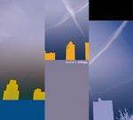

| Artist: | Brand X |
| Title: | Trilogy |
| Label: | Buckyball Records BR011 |
| Length(s): | 51+50+54 minutes |
| Year(s) of release: | 2003 |
| Month of review: | [09/2003] |
| 1) | True To The Clik | 5.29 |
| 2) | Stellerator | 6.17 |
| 3) | Virus | 7.56 |
| 4) | XXL | 5.51 |
| 5) | The Worst Man | 4.32 |
| 6) | Manifest Destiny | 4.10 |
| 7) | Five Drops | 3.52 |
| 8) | Drum Ddu | 5.50 |
| 9) | Operation Hearts And Mind | 4.40 |
| 10) | Mr. Bubble Goes To Hollywood | 2.26 |
Disc 2:
| 1) | Xanax Taxi | 5.57 |
| 2) | Liquid Time | 4.39 |
| 3) | Kluzinski Period | 7.00 |
| 4) | Healing Dream | 3.51 |
| 5) | Mental Floss | 3.17 |
| 6) | Strangeness | 3.23 |
| 7) | A Duck Exploding | 6.47 |
| 8) | Message To You | 0.25 |
| 9) | Church Of Hype | 5.54 |
| 10) | Kluzinski Reprise | 4.25 |
| 11) | Zero DB | 4.52 |
Disc 3:
| 1) | Algon (Where ...) | 6.48 |
| 2) | Phil Collins Commentary | 1.58 |
| 4) | Robin Lumley Commentary | 2.03 |
| 5) | Don't Make Waves | 6.04 |
| 6) | Robin Lumley Commentary | 1.24 |
| 7) | Phil Collins Commentary | 0.42 |
| 8) | Malaga Virgen | 13.15 |
| 9) | Phil Collins Commentary | 1.36 |
On Stellerator the band moves into atmospheric directions. There is tension here, a cosmic presence. Then the music becomes more percussive, somewhat Art Of Noise like in fact. I like this part less, it is a bit too cold. In Virus we find the longest track on the album, almost 8 minutes. Again the percussion is strongly present and some vocal wailings as well. Brand X turning World music? In a way, but the continuation is almost the intro to a catchy rock song. However, it turns into something vaguer soon enough, with plenty of percussion and samples. But melody is present, and a brooding presence as well. Later the song starts to rock again with heavy pounding drums. A varied track, vague in some places, rocking and melodic in others.
XXL is like the opener a very percussive track, the rhythms being quite modern, the keyboards quite funky in outset. Is this the British jazzrock band, or are we talking Funkadelic here? The song also has vocals in the back. With The Worst Man we are back at ethereal occasional jazzrock with focus on atmosphere. The song is a slow moving instrumental, cosmic in outset. Later, the bass goes funky tho and brassy keys set in. Is this Brand X or Tower Of Power? Just kidding, this time. The music wanders on a bit and I can't say I am too impressed by the songs themselves. This one has an Arabic tinge.
Manifest Destiny is a rock track, with heavy chords in the beginning. It was time for a bit of fury. A catchy and potent piece of work. Five Drops is totally different again, a plucking acoustic affair on Spanish guitar. Later we get vibes for a warm feel.
Not surprisingly Drum Ddu opens with percussion and it seems we are into salsa right now. The guitar also speaks up, a bit interjectedly, reminding me ehm Elephant Talk? Marimba is also present here enhancing the percussiveness, while the samples are in Art Of Noise style, also quite percussive like. More and more the guitar takes over with some more coherent playing. The guitar sound is quite noisy here.
With Operation Hearts And Mind is a typical jazzrock track, (but) with sharp emotional guitarplaying. The guitar goes over the emotional top later on, but then suddenly dies does to give way to an easy going passage of vibes. Mr. Bubble Goes To Hollywood is the closer of this first disc. And it is that rare thing in music these days: a drum solo. Washes of cymbals with just a little bit of bass, hardly audible. az` On the whole this album is quite percussive, but also cold and standoffish. I prefer a bit more melody myself and could enjoy tracks like the title track, but a numbers did little or nothing for me.
We continue with disc number two, which is chronologically the earlier one. Xanax Taxi is jazzrock territory, with plenty of guitar and bass and less focus on percussion. A repetitive groove with Jones on fretless bass humming away and the guitar playing the main line and some keyboards ringing out occasionally. After two minutes of this it is time for a change, which comes by something like a reveu tune, but soon are we back in jazz territorry with typically jazzy guitar playing meandering its way through an ocean of notes. This kind of music says me little. Finally there is soom room for a drum solo, but the guitar and bass return before the end. Here experimentation reigns some.
On Liquid Time we find moody bass lines. We might be thinking of Levin here, but also various ToneCenter releases. The guitar plays with long sustain, long slow notes, until we slip into something more funky, and at once also dreamy. This is a bit more interesting, the dreamy part being in a way quite disjointed rhythmically, while the more ostentatious guitar parts are quite melodic. These passage alternate while the music gets more hectic towards the end of the song. We end on a bombastic note.
Kluzinski Period is the longest one (and we got a reprise coming later). As it's title this is a mysterious one, the bass rumbling, guitars in the back, while the drums are the only thing at the fore. The melody on this one is quite distinctive and estranging as well. Later the song gets more active with especially the guitar playing some fast interjections.
Healing Dream is friendly and acoustic and melodic too, at first only light fingered playing. Later an acoustic guitar sets in with a much clearer louder sound. Mental Floss opens with some menacing guitar lines. It is jazzrock time again, but with some tension in there too, which usually makes for something more interesting. The middle part is less loud, with some fast hectic guitar playing.
Strangeness should be something strange, that I think is something we can agree upon. The opening is quite eerie with mainly sound effects and some rumbling guitar and bass. We get this primordial atmosphere with light percussion, something in the line of Levin and alii on From The Cave Of The Iron Mountain.
Tenderhearted as she is, my wife did not like the title A Duck Exploding. Slow, ponderous guitar lines, a bit sounding like a horn section of sorts. The music drops out halfway, and we get some squirrely guitar sounds. The end is more hectic with some good guitar playing and nice flowing drums. Message To You is a short one, moody and melodic.
Light ethereal jazzrock we find in Church Of Hype, with some moody bass ridden elements as well, which take out the pace and bring in more melody. Kluzinski Reprise is up next. A pretty disjointed affair, vague in a way. The drums are clear as ever, lots of cymbals.
Zero dB closes down this second album, opening with plenty of drums. A drum solo again? Yes, it seems to be, just like on Manifest Destiny.
The difference in years between the studio albums can be felt in the more usual jazzrock approach on disc two, compared with the modern more rhtyhmic disc one.
Finally the live disc. Among the songs are separate tracks with live talking by Phil Collins and Robin Lumley. Nice feature is that because they are on separate tracks that you can filter them out and play only the music.
Algon (Where ...) is the opener of the live disc and the most striking contrasts with the foregoing is the strong presence of keyboards, the lesser focus on drums and the more melodic approach in the song material. There is something quite seventies about it, maybe because of the way the piano is played and voiced. The sound quality is good, while keeping the live feel present. Algon (with its long subtitle) is in fact a rather friendly track, with the keys sometimes going into the ELP direction. On the other hand there are also more urgent parts.
Dance Of The Illegal Aliens is a long one. It is indeed a bit danceable the opening of this one, the drums are monotonous, and again Lumley and Robinson dominate, although the bass also has its place in the sun. A somewhat moody track at times, but happy at others. Again, the melodiousness is striking. Again, there is also room for tension, and a bit of guitar work, but mainly in a subservient role.
Don't Make Waves is a catchy vocal track with Collins doing the lead ones and Goodsall the backing. Although still recognizably jazzrock, the song does remind one of later day Genesis. In between the catchy choruses the song can be quite subdued.
Malaga Virgen opens with a bass solo from Jones. Then piano and keyboards set in, with Collins moving in jazzy fashion in the back. Typical jazzrock this, but again good melodies shine through. The music is on the quiet side generally, although it can be quite fast. Listen for instance to the duet between rhythm guitar and keyboards and you know what I mean. Halfway then, we get back to the bass side of things. Things are moving slow here. This part takes a few minutes, understated jazzrock, slowly getting back in its tracks. But the tension holds up well. The piano takes the lead now for some great tunes. Of course, before the end the up-tempo passage returns for a energetic ending.
The closer is And So To F, a rather nervously opening affair. The music can easily be compared to Camel in their Moonmadness days. This time it is the guitar that takes the lead, with the keyboards dancing in the back. The chords can become quite noisy and raw here. Collins scats around in high tempo. A typical concert closer this.